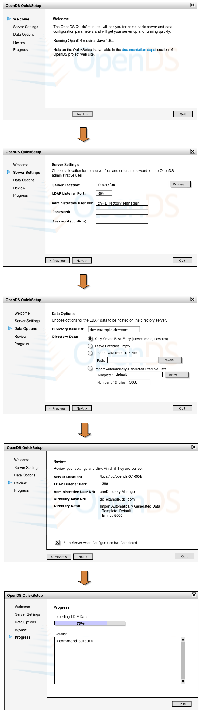

Goals
- Make it easy for users to download, configure, and run the latest build of OpenDS
- Make a good first impression, from both a functional and visual perspective
Scope
- Configuration-wise, provide equivalent of the setup.sh/setup.bat command:
- Configure LDAP port
- Set administrative user and password
- Set Base DN for server
- Support importing data into database
- Option to start the server when configuration complete
- Installation-wise, provide a Webstart version of the tool that will download latest weekly build from project website and unzip it in the location of user's choosing (in addition to supporting configuration)
- Two Versions:
- Webstart version launched from Downloads page on project site that supports installation as well as configuration
- Command-launched version of the tool, that only supports configuration (assumes user has already downloaded latest build as a zip)
- There will be no "update" capability, the tool will only support fresh, new installations
- The tool is not intended to be used as a configuration tool -- it is only intended to be run once per server instance
- Only supports running OpenDS as an LDAP directory server
Usage Options
Download zip and run locally
- User downloads latest build from builds page on project site
- Unzips file in the location in which they want to run the server
- cd to the directory containing the server files
- Launch QuickSetup tool via 'quicksetup' command in terminal window
Webstart
- User clicks link on Downloads page to launch QuickSetup tool
Task Flow
- Peruse welcome screen
- Click Next
- Enter server location (webstart) or confirm server location (local)
- Accept or override default LDAP port
- Accept or override default Administrative User
- Enter password for Administrative User
- Re-enter password for Administrative User
- Click Next
- Accept or override default Base DN
- Choose a data option:
• Only create base entry
• Leave suffix empty
• Import LDIF file - requires entering or browsing for ldif file
• Import automatically-generated entries - requires accepting default or entering/browsing new template and selecting the number of entries to generate
- Click Next
- Verify configuration settings on Review page
- Choose whether or not to start server when config complete
- If OK, click Finish
- Monitor server configuration progress
- Click Close when finished
Design Wireframes

Revision History
| 25-Aug 2006 |
Brian Ehret |
First draft of document |
| |
|
|